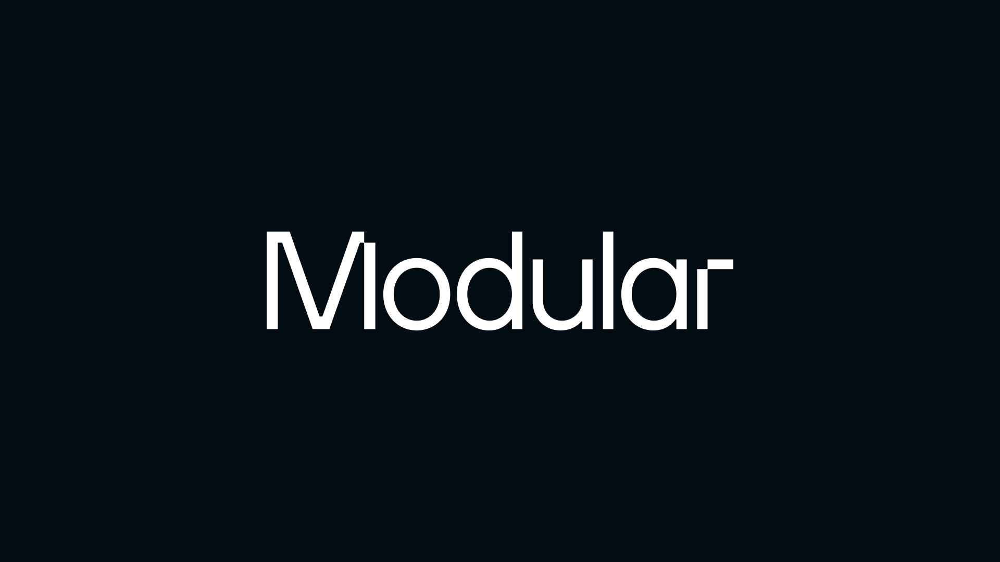
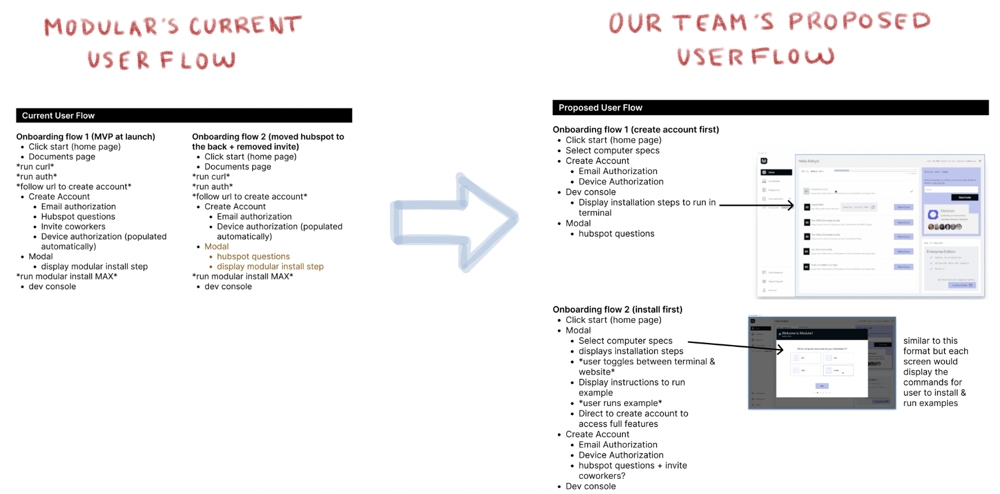
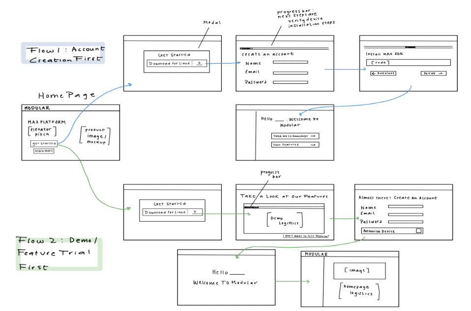
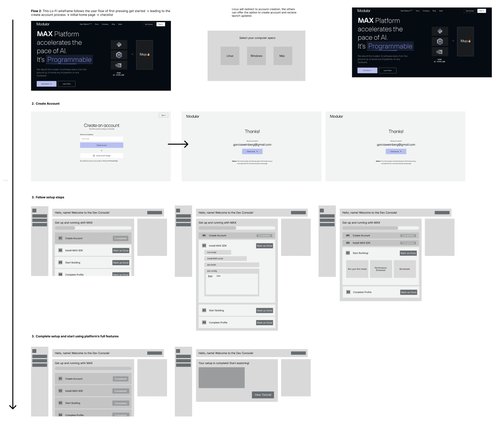
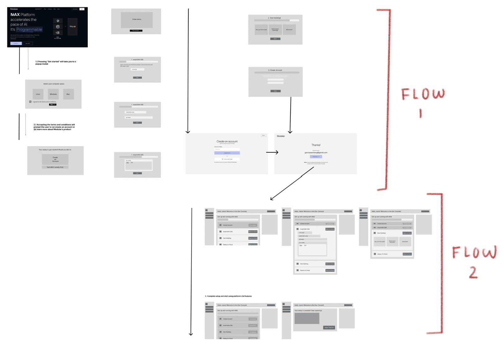
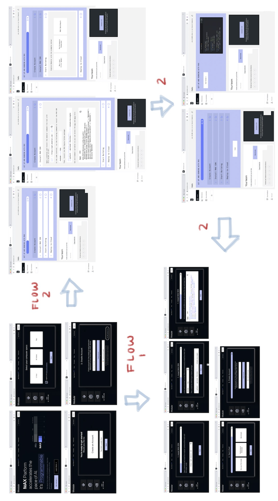

Project, Digital, Redesign, Prototype, Human-Centered Design
(Designer, Group project)
Goal: Create a more inclusive and frictionless onboarding experience
that guides the user, and orders the steps in the correct way according
to UX and psychology principles.

The Client & Their Client
What is Modular and who uses it?
Modular is a growing tech startup startup creating a platform
for developing and optimizing AI systems - Modular's tech stack
reduces the costs and pain points associated with deploying an
inference model to multiple hardware.
Modular's target audience is ML engineers, working
full time at a tech company that has many AI models
in development.
The Client's Goals
Why did Modular approach us with this task?
Modular's main problem was determining how to "improve" the
Modular onboarding process. Modular was losing 50% of potential
users simply due to the complexity of the onboarding stage.
Modular hypothesized this dropoff was due to the fact that the
onboarding process is complicated and long, involving the use
of a terminal to run commands. Similarily, the old onboarding
process brought the user to a documentation page that
convoluted and elongated the onboarding process on the user's end.
What problems are we solving?
1. How can the user avoid simply just visiting the
Modular documentation page?
2. Do we want the user flow to be (1) "Create an Account"
and (2) "Install the SDK" or vice versa?
Breaking the problem down

Key Changes
* Forked user flow, flow 1/2: Create account immediately
(user gets choice in order of flow)
* Forked user flow, flow 2/2: Demo then create account
(user gets choice in order of flow)
* Modal for onboarding instructions instead of redirection
to documentation page
* Progress bar to show percentage of onboarding completed
Changes Explained
Flow One vs. Flow Two
Initially, we made two user-flows. Flow One was focused
on having the user create an account and then install the
application locally. Flow Two has the user install
the application locally first, test it, and then create
an account afterwards.
Benefit: Former would be users that have experienced
the Modular application before while the latter would be
helpful for users that haven't played around with the
application before.
Forked User Flow
Our main design that we reflected in our Lo-Fi Wireframe
was actually to combine Flow One and Flow Two to create
a Forked User Flow. Instead of choosing which user-flow that
would appeal to all users, we made the design choice to give
that choice to the user. Then at the end, all users will
end at the same position, the user's personal
dashboard.
Benefit: Appeals to users that are both familiar and
unfamiliar with the platform. so that they can get the most
out of the platform based off their familiarity with the
product.
User Dashboard
We changed the user's personal dashboard after they
created an account to be a checklist.
Benefit: Ensures that the user has followed the
necessary steps to set up the application locally. This
also solves the previous user pain point of being
re-directed to the un-intutitive documentation page.
Our Visual Design Progression
Brainstorming & Iterating
Sketches
Each team member created multiple iterations of sketches, which
we then combined to form our initial low-fi sketch.

Brainstorming & Iterating
Low-Fi - First Iteration
We then created our first low-fi sketches...


Low-Fi - Second Iteration
... which we updated as
we recieved client and peer feedback.
Final High-Fidelity Mockup
After two final rounds of peer revision, client feedback
and team re-iterations, we developed our high-fidelity mockups!

Client Feedback
1. UI Refinement
Overall, our client mentioned that
some of our slides require some refinement, such as
decreasing the spacing between elements or
increasing the font size.
2. Design Element Refinement
E.g. adding a back button in between the modal screens,
a "remind me later" functionality button in the create
account section, and further pushing to explain to
the user why we need to take these certain steps in
the onboarding process.
3. Next Steps
We talked about some potential solutions such as
creating a user home page that they can
personalize for the user. Another solution could
be to not have a homepage but instead just have a
dashboard of the most important information.
Takeaways + Experience
Overall, as a group, we really appreciated this project for
giving us the opportunity to work through the full
iterative-design process with a real startup in the industry.
Having the opportunity to talk to a real design lead and
exchange feedback on our wireframes was one of our favorite
moments of the semester as we were able to apply the concepts
and skills that we learned in class into the real world. In
the end, we were able to present our final prototype to our
client while receiving overall positive feedback.